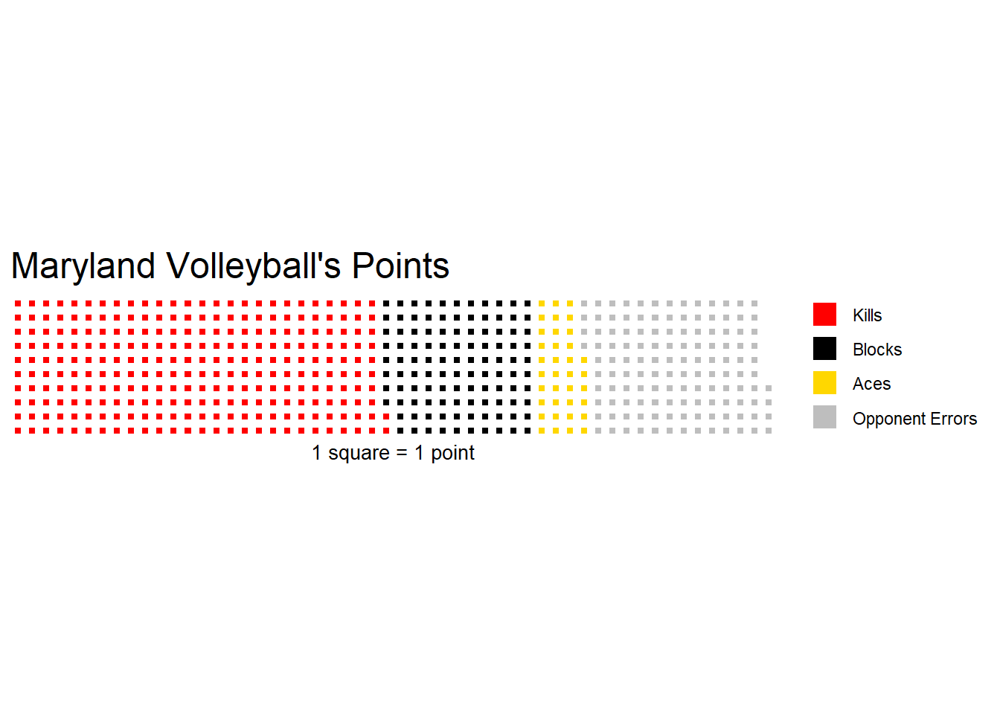

Rows: 4878 Columns: 38
── Column specification ────────────────────────────────────────────────────────
Delimiter: ","
chr (4): team, opponent, home_away, result
dbl (33): ncaa_id, team_score, opponent_score, s, kills, errors, total_atta...
date (1): date
ℹ Use `spec()` to retrieve the full column specification for this data.
ℹ Specify the column types or set `show_col_types = FALSE` to quiet this message.
This dataset contains thousands of match logs from across the current Division I collegiate volleyball season. Since I’ll only be analyzing Maryland right now, I need to filter the data to only include Maryland’s matches.
Now, I need to calculate the total number of kills, blocks, aces, and opponent errors (four methods of scoring points) that Maryland has amassed this season.
To visualize the proportionality of a statistic - that is, how much a smaller datapoint (such as kills, in this case) accounts for a larger stat (such as points) - waffle charts work well. Here I’ll create one that cleanly and simply displays how Maryland scores its points.
Warning: Using `size` aesthetic for lines was deprecated in ggplot2 3.4.0.
ℹ Please use `linewidth` instead.
ℹ The deprecated feature was likely used in the waffle package.
Please report the issue to the authors.

As is the case for most volleyball teams, a majority of Maryland’s points come from kills or opponent errors. This data in itself isn’t too useful without context, though. To better gauge how the Terps’ scoring stacks up to other teams, we need to analyze another team.
I’ll choose Nebraska to take a look at the scoring breakdown for one of the nation’s premier programs.
Since Nebraska has considerably more points than Maryland, I’ll need to add “padding” to Maryland’s points total to ensure that each waffle chart is displaying data on the same scale. Otherwise, each waffle chart would display different-sized squares.
Since Nebraska’s points total is 1,420 and Maryland’s is 1,070, I’ll add 350 squares of padding. To do this, I’ll add a set of 350 unnamed squares to the waffle chart.
Kills, blocks, aces, and opponent errors account for roughly the same share of both teams’ total points. Nebraska seems to accumulate slightly more of its points from kills, and maybe a bit more from opponent errors, compared to Maryland, but aside from that, the proportionality of all four stats is largely the same.
The share of these stats may not be the most indicative of how good a team is overall, but rather how proficient the team is in a specific area. If a team had a considerable share of its points from blocks, for example, that would show that they likely have a sturdy defense.
I would have to create and analyze waffle charts for other teams to determine how Maryland and Nebraska’s share of statistics are typical, or if they both differ from the average. I’d imagine that the most significant variation comes from the number of blocks and aces a team has tallied, because most of a team’s points will naturally come from kills and opponent errors.